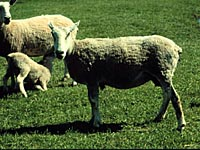
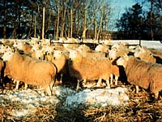
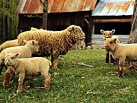

Sheep and goats were the first animals to be domesticated after the dog. It is thought that sheep had begun to occur over 6000 years ago. Selection for wool type, flocking instinct and other economically important traits over the centuries has resulted in more than 200 distinct breeds
of sheep occurring worldwide. Modern breeding schemes have also resulted
in an increasing number of synthetic breeds which are the
result of a crossing of two or more established breeds. Sheep are the most numerous livestock in the world and the rasing of sheep in Saskatchewan is mainly for the meat from the lamb. The meat is processed in both Saskatchewan and Alberta and the wool that is taken from the sheep is sent to the U.S. for processing because of a lack of processing facilities in Canada.

The sheep's flocking instinct made them easily adaptable to domestication. Domestic sheep (Ovis aries) are derived from the European wild sheep (mouflon), which may have migrated across the land bridge in the Pleistocene period. Both the sheep and humans have benefited from the association. Domestic sheep have been modified from their wild ancestors to such an extent that they are entirely dependant upon humans for their survival.
Mutton is the principal meat in many European countries, in the Middle East, India and North Africa.
Sheep have been a part of Saskatchewan's agriculture for more than 100 years, with early settlers bringing breeding stock to harvest the province's vast rangelands. Breeding stock have been selected for growth, carcass traits and maternal characteristics. In addition, some extreme climatic conditions in Saskatchewan have contributed to seedstock which are hardy and adaptable to a wide range of conditions.

In many areas, sheep are used as an effective way of controlling brush and woody plants. The use of sheep as grazers keeps the use of herbicides low and benefits land managers by minimizing the need for clearing brush manually. Sheep grazing has helped regenerate certain species of conifers. Since brush and woody plants invade areas previously dominated by grassy vegetation, grazing of these plants helps to decrease their existence and increase biodiversity by allowing other plants to thrive. Controlling forest undergrowth, wildfires can be diminished, wildlife habitats can remain fairly unchanged and local ecosystems remain balanced. The sheep, in turn, provide us with resources such as wool, meat and lanolin. Proper grazing is the key to this industry and sheep producers that take an active role in the protection, maintenance and restoration of the environment can help riparian habitat with the raising of sheep.
|